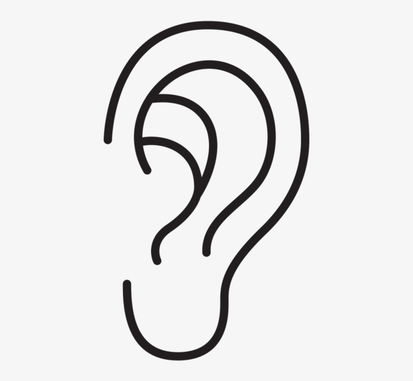
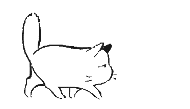
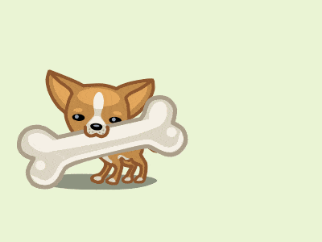
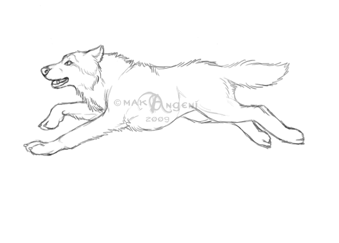
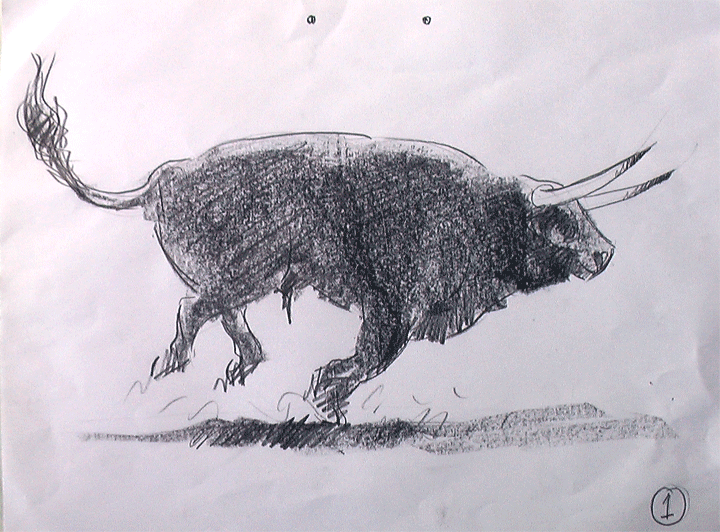

Sonidos de animales
Nota:reproduce diferentes sonidos como ladriodos,maullidos,mugidos o aullidos
Iniciar
Nota Ruido de Fondo es Maullido
sonidos: Gato-Perro-Lobo-Toro
Escucho -
Confiansa -

   